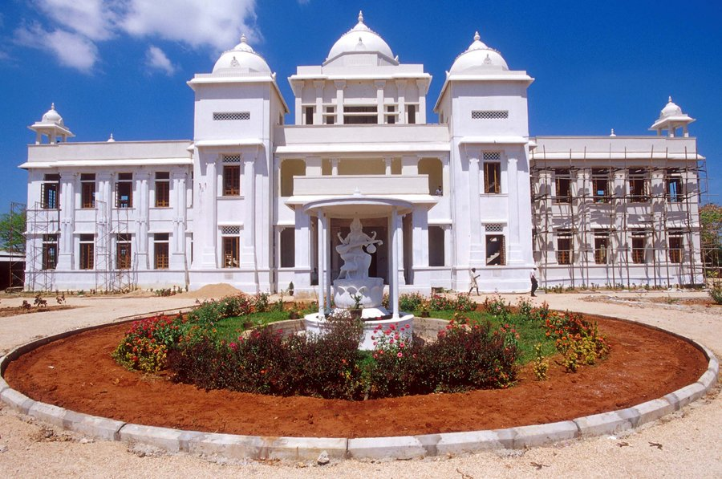

February 2003
Editorial Comments
Articles
- Addressing the Psychosocial Problems of Women in a War Ravaged SocietyDaya Somasundaram
- What Impede Economic Revival in the North & East Province of Sri Lanka?Muttukrishna Sarvananthan
- Tamil version of the above (original page, needs the Baamini font)Muttukrishna Sarvananthan
- To the Memory of the Three-wheeler DriverSumathy
- Who Wins the Neo-liberal Peace? The World Bank, Information Asymmetries and the Economics of Peace in Sri LankaDarini Rajasingham-Senanayake
- Running Away from PeaceArjuna Parakrama
- ‘LTTE and the Law in the Northeast’: Following up on Sasanka PereraAudrey Rebeira, Indrakanthi Perera, Malathi de Alwis, Pradeep Jeganathan and Sumathy Sivamohan
- Nationalism and the Left in Sri LankaRohini Hensman
- Her-story is HistoryKathleen Fernando
- DefinitionSubuhi Jiwani
- Recommendations of International Women’s Mission to the North East of Sri Lanka